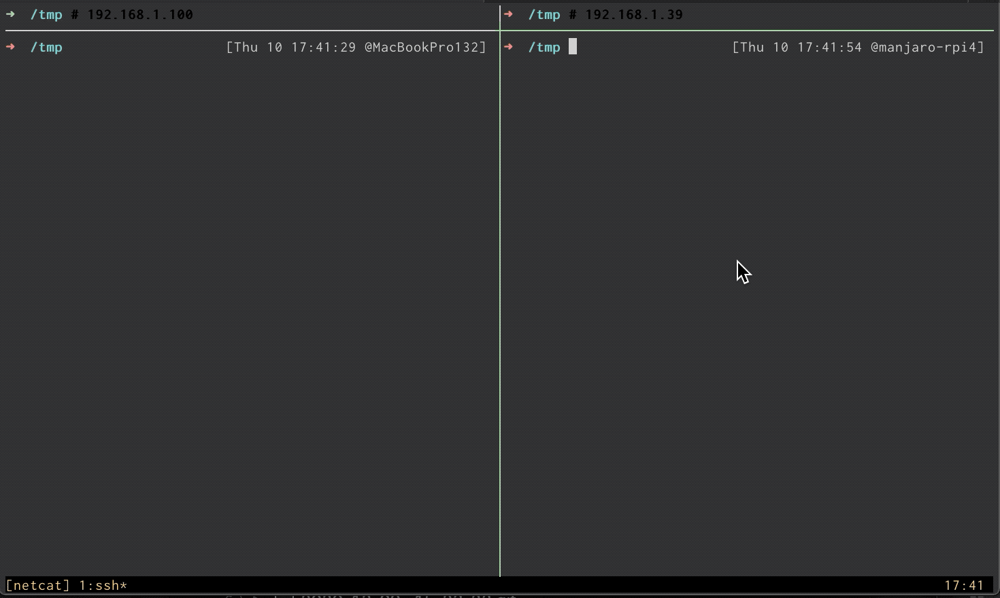
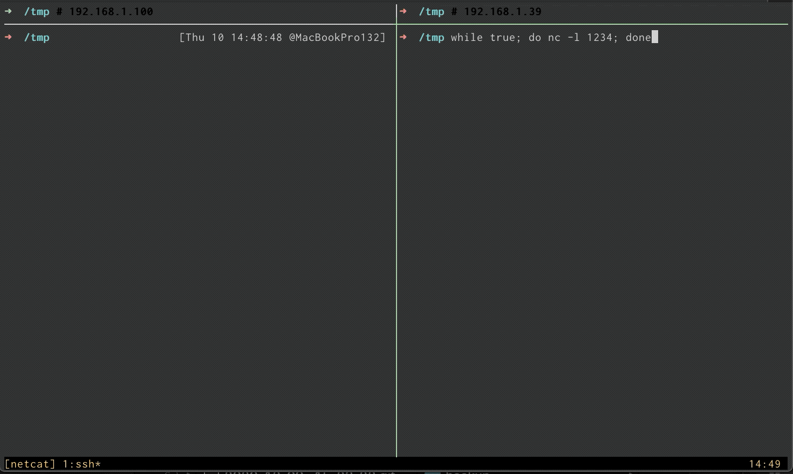
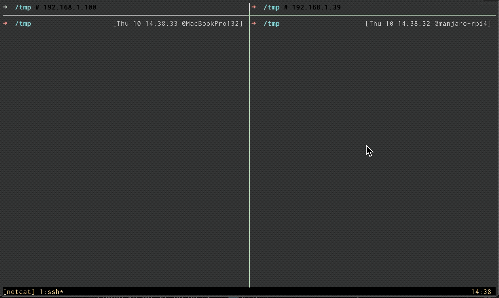
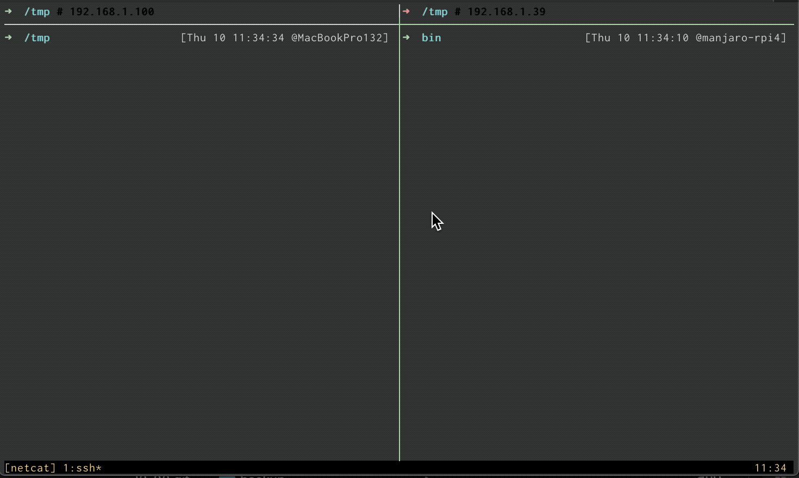
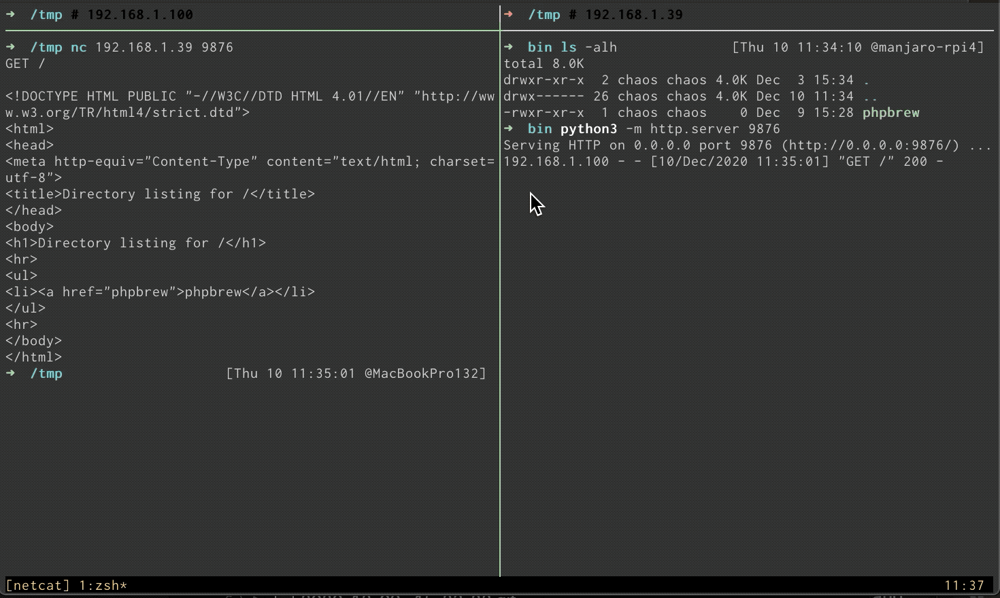
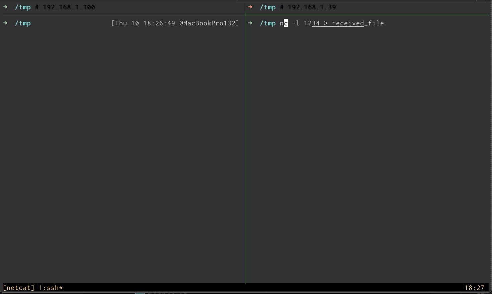
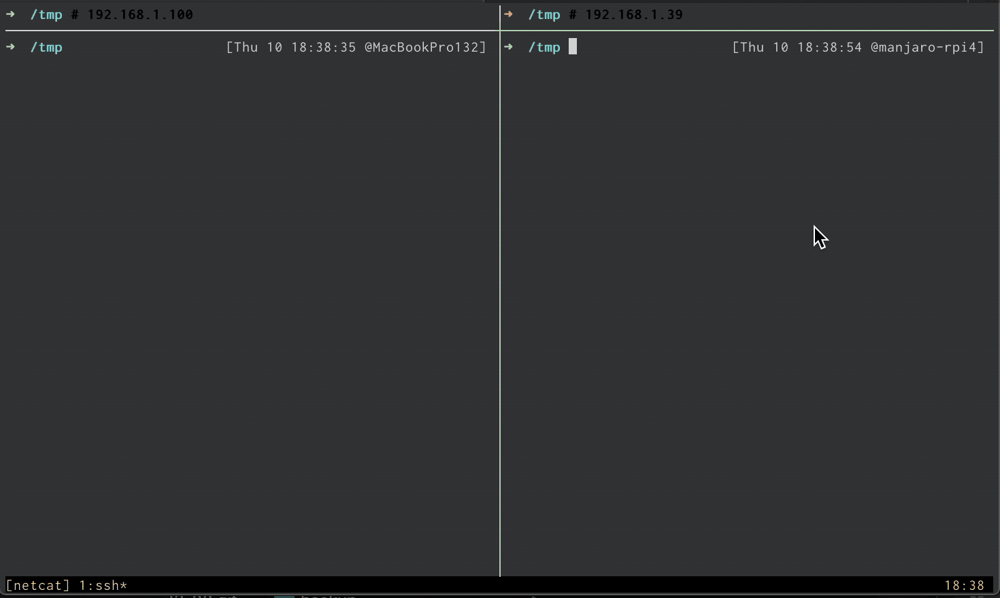
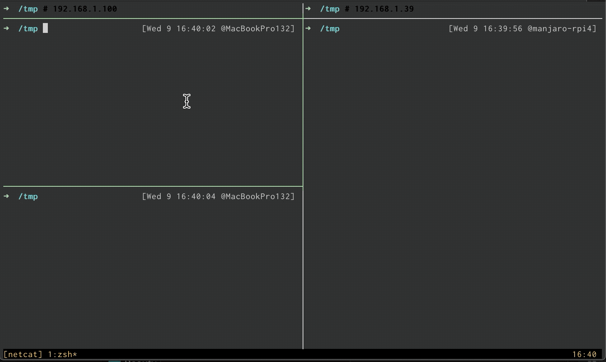
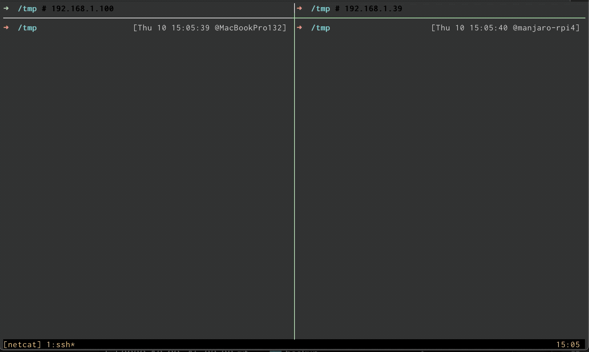

欢迎转载，但请在开头或结尾注明原文出处【blog.chaosjohn.com】
前言
本来打算写 端口转发(篇三) - netcat
但是中途发现 netcat 水很深，原因听我细细说来
netcat 被成为 TCP/IP 的瑞士军刀，得益于它虽体积小（几十KB）却在网络下无比强大，在各种场景下都有它发挥的余地，以至于在各大 Linux 发行版 中都默认安装。
原版的 netcat 第一版在 1995年10月28日 被发布，且最后一个版本 1.10 发布于 1996年3月，被称之为 tranditional netcat。
随后，为了兼容 POSIX，推出了不同实现的版本，最有名的为 OpenBSD netcat 和 GNU netcat：
OpenBSD版本的支持IPv6和TLSGNU版本的支持-e参数，可以在建立连接后执行命令
很有意思的是：
- 大部分的
Linux 发行版，以及macOS/FreeBSD，预装的都是OpenBSD netcat，如果要使用GNU版的，得自行从包管理器安装。 Windows上只有GNU netcat
水很深 的原因就在于，如果只用 netcat 进行端口转发，必须用到 GNU 版本的 -e 参数，所以就临时更改一下本文题材，讲解一下 netcat 的使用以及案例，且主要针对 OpenBSD netcat。
使用
- 我们先调用
nc -h来看一下：1
2
3
4
5
6
7
8
9
10
11
12
13
14
15
16
17
18
19
20
21
22
23
24
25
26
27
28
29
30
31
32
33
34
35
36
37
38
39
40
41
42
43
44$ nc -h
OpenBSD netcat (Debian patchlevel 1)
usage: nc [-46CDdFhklNnrStUuvZz] [-I length] [-i interval] [-M ttl]
[-m minttl] [-O length] [-P proxy_username] [-p source_port]
[-q seconds] [-s sourceaddr] [-T keyword] [-V rtable] [-W recvlimit]
[-w timeout] [-X proxy_protocol] [-x proxy_address[:port]]
[destination] [port]
Command Summary:
-4 Use IPv4
-6 Use IPv6
-b Allow broadcast
-C Send CRLF as line-ending
-D Enable the debug socket option
-d Detach from stdin
-F Pass socket fd
-h This help text
-I length TCP receive buffer length
-i interval Delay interval for lines sent, ports scanned
-k Keep inbound sockets open for multiple connects
-l Listen mode, for inbound connects
-M ttl Outgoing TTL / Hop Limit
-m minttl Minimum incoming TTL / Hop Limit
-N Shutdown the network socket after EOF on stdin
-n Suppress name/port resolutions
-O length TCP send buffer length
-P proxyuser Username for proxy authentication
-p port Specify local port for remote connects
-q secs quit after EOF on stdin and delay of secs
-r Randomize remote ports
-S Enable the TCP MD5 signature option
-s sourceaddr Local source address
-T keyword TOS value
-t Answer TELNET negotiation
-U Use UNIX domain socket
-u UDP mode
-V rtable Specify alternate routing table
-v Verbose
-W recvlimit Terminate after receiving a number of packets
-w timeout Timeout for connects and final net reads
-X proto Proxy protocol: "4", "5" (SOCKS) or "connect"
-x addr[:port] Specify proxy address and port
-Z DCCP mode
-z Zero-I/O mode [used for scanning]
Port numbers can be individual or ranges: lo-hi [inclusive]
我们挑几个常用的参数解释一下：
-4允许IPv4（默认允许）-6允许IPv6-kkeep-alive，上一个socket结束后仍可以重新建立socket再次被连接-p本地端口-l监听模式，在OpenBSD版下可省略-p，即 “-l 8080“ 等同于GNU版的 “-l -p 8080“-q在接收到EOF后等待预设的秒数，然后断开连接-U使用Unix Socket-u使用UDP模式-v输出详细信息（GNU版有-vv模式，可输出更详细的信息）-w预设连接超时时间-z表示不发送数据
案例
大部分的案例，笔者都录制了终端的 GIF 动图：
tmux会话左侧为本地macOS，IP为192.168.1.100tmux会话右侧为远端Linux，IP为192.168.1.39
一次性聊天室
- 远端执行
nc -l 1234 -4 -6 - 开启
-4和-6参数，既监听IPv4又监听IPv6（可省略-4） - 连接成功后，两边均可键入字符，然后按下回车键发送给对方
- 本地使用
CTRL-D关闭连接，因默认为TCP模式，远端也会默认退出

伪常驻 聊天室
- 远端执行
while true; do nc -l 1234; done，使得连接一旦结束，远端会再次发起监听

UDP 聊天室
- 远端执行
nc -l 1234 -u，本地也需要加-u参数才能连接 - 与
TCP连接有开始有结束不同，UDP模式并没有关闭连接之说，所以CTRL-D无效，只能在两端分别用CTRL-C结束进程 - 默认情况下，远端处理完一次连接后，并不会再次监听新的请求，所以加上
-k参数，可以维活处理多次连接

发起 HTTP 请求（交互式）
- 远端执行
python3 -m simple.http 9876，在9876端口开启一个文件 Web 服务器 - 本地执行
nc 192.168.1.39 9876，连接上远端的 Web 服务器 - 交互式的输入
GET /或者GET / HTTP/1.0后，连按两下回车键，即可发送 HTTP 请求，并收到远端的请求响应

发起 HTTP 请求（命令式）
- 本地执行
echo -n "GET / HTTP/1.0\r\n\r\n" | nc 192.168.1.39 9876（注：GET / HTTP/1.0\r\n\r\n可缩写为GET /\r\n\r\n） - 上则案例中的 “连按两下
回车键“，就是模拟的 “连续两个\r\n“

文件传输（简单）
- 远端先执行
nc -l 1234 > received_file，开启监听，如果建立连接且有字节流入，就会输出到文件received_file - 本地再执行
nc 192.168.1.39 1234 < iTerm2.zip，将文件iTerm2.zip传输过去 - 用
file和ls -al命令查看一下两边文件是否一致

文件传输（使用 tar 归档传输多文件）
- 远端先执行
tar cvf - text1.txt text2.txt | nc -l 1234 -q 1，先使用tar归档多个文件，并使用管道流向netcat并开启监听 - 本地再执行
nc 192.168.1.39 1234 | tar xvf -，建立连接后读入字节流，由管道流向tar后解压出原多文件 -q 1表示传输完毕后，等待1s后退出，如果是-q 0则可用-N来代替

socket通信
- 本地先执行
nc -lU /tmp/socket，使用-U参数使用并创建套接字文件 - 本地新终端
echo "hhh" | nc -U /tmp/socket，将字符串 “hhh” 写入套接字文件，则在原终端会从套接字文件中读出 “hhh” 字符串

网络测速（配合 dd 使用）
- 远端先执行
nc -vl 1234 > /dev/null，表示读入的字节流直接写入/dev/null文件，这么做的目的是排除真正文件读写的磁盘速度上限干扰 - 本地再执行
dd if=/dev/zero bs=1024 count=102400 | nc -vn 192.168.1.39 1234，从/dev/zero中不断生成字节流，每个区块1024个字节，以供102400个区块，总计 100MB，最后dd报告得出，网络速率为 7630165 KB/s，即 7.6 MB/s（测试速度慢是因为远端 Linux 是树莓派，通过2.4GHz Wi-Fi接入局域网）

服务端口诊断
案例背景：公司的 Elastic Search 服务器集群部署在阿里云，其 9200/9300 端口的防火墙直接采用阿里云的安全组配置，内网IP和公司所在的公网IP才可以访问。
本地开发环境如果发现 Elastic Search 连接报错，我们会采用 telnet es.example.com 9200 来作第一步诊断：
- 如果
telnet能连接成功，则表示本地开发环境出了问题1
2
3Trying 120.27.216.xxx...
Connected to es.example.com.
Escape character is '^]'. - 如果
telnet无法连接，则表示可能因为公司IP变化后无法命中阿里云安全组白名单所致1
2Trying 120.27.216.xxx...
telnet: Unable to connect to remote host: Connection refused
其实可以不用 telnet，而且 telnet 在 macOS 环境中并没有预装，我们可以改用 nc -vz es.example.com 9200 来替代
- 端口能访问
1
Connection to es0.example.com (120.27.216.xxx) 9200 port [tcp/wap-wsp] succeeded!
- 端口无法访问
1
nc: connect to es0.example.com (120.27.216.xxx) port 9200 (tcp) failed: Connection refused
写在最后
本文演示了一些 OpenBSD netcat 的案例，其实用管道配合其他工具，还能出很多很多的案例，但是吸收了上面的几个案例之后，通过举一反三，相信读者也能深谙 netcat 的强大。
后面笔者会以 GNU netcat 为重点写个 篇二，因其存在 -e 参数，所以其部分内容单独拎出来也可以作为 端口转发(篇三) - GNU netcat
最后，如果该文对读者有些许帮助，考虑下给点捐助鼓励一下呗😊